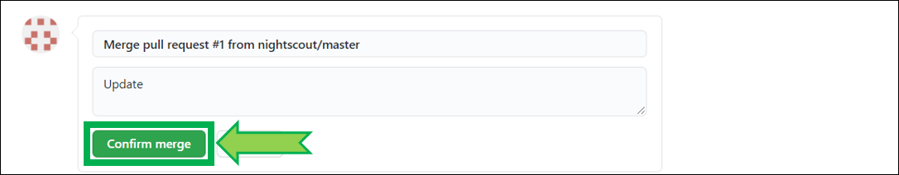
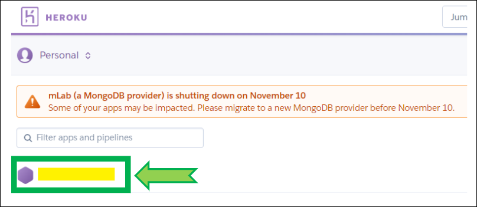

Updating Your Site to the Latest Version⌁
Updating your website to the latest version (see here which is the current released version) is easy with the update tool linked below.
Requirements⌁
This version of Nightscout will probably not run on anything older than these versions/platforms:
- Android 4
- iOS 9
- Chrome 68
- Edge 17
- Firefox 61
- Safari 10 (macOS 10.12)
- Opera 54
- Internet Explorer: none
Azure Users⌁
As of 0.12, Nightscout no longer readily supports the free Azure platform. If you really want to keep using Azure, don’t update to this version. Read this https://github.com/nightscout/cgm-remote-monitor/wiki/mLab-discontinuation-FAQ
Step1: Update your repository in GitHub⌁
- Click here to log in at GitHub: https://github.com/login.
- Enter your username or email and your password. Click
Sign in

- Select your own
cgm-remote-monitorproject (notnightscout/cgm-remote-monitor)

- Your repository will open, note your GitHub username (hidden below in yellow).
- Scroll down until you see the Nightscout logo.
- Click
Update your site
- Enter your GitHub username and click
Check for updates
- If an update is available click
Continue updating at GitHub - Make sure you see
GitHub user located!else check your username. - If you know an update is available but you see
Repo is Up to date, try the alternative method.
- A pop-up will open, just click OK (you can read the contents if you want, but this is explained below, so just click OK)
- Now comes the tricky part. Make sure the left hand side repository is yours (name hidden in yellow) and the right hand side is
nightscout/cgm-remote-monitor, and clickCreate pull request.
- A pull request opens. Last chance to check the left hand side repository is yours (name hidden in yellow) and right hand side is
nightscout/cgm-remote-monitor, write a comment in the field (example Update or whatever you like)
- Scroll down and click
Create pull request
- Scroll all the way down (it might be far away) and click
Merge pull request
- Click
Confirm merge

- A new line will appear in the pull requests log showing merge succeeded
- Your GitHub repository will show you're one commit ahead of the released version
- You have successfully updated your GitHub repository, now let's deploy it in Heroku.
Step2: Deploy in Heroku⌁
- Log in Heroku https://id.heroku.com/login

- Select your app (hidden in yellow)
- Note: see this mLab message? Time to migrate to Atlas, it's mandatory!

- Click on
Deploy

- Verify Heroku is connected to GitHub, if not, click
Connect to GitHub

- If Heroku is not connected to GitHub, scroll down and click
Connect to GitHub, if a popup window opens and requires authorization, clickAuthorize Heroku

- Verify your app
cgm-remote-monitoris connected to GitHub

- If it isn't, In
Connect to GitHub, typecgm-remote-monitorand clickSearchthen clickConnect

- If you have trouble connecting your app, click
Disconnectand reconnect it as shown above

- Scroll down to the bottom of the page, select the
masterbranch and clickDeploy Branch

- Build will start and information will scroll in the log window. Do not leave the page, do not interfere and wait for completion. It might take more than 10 minutes. Interrupting the process will lead to a broken site and you'll need to restart deployment.

- Wait until the deploy process completes and click
View

- Your site will open and should be at the latest version. You're done!
- Else, if you ran into trouble, try the alternative method below.
Alternative method⌁
- Click here to log in at GitHub: https://github.com/login.
- Enter your username or email and your password. Click
Sign in
- Select your own
cgm-remote-monitorproject (notnightscout/cgm-remote-monitor)
Click Settings
Scroll down to Danger zone and click Delete this repository

Copy and paste your full repository name to confirm then click I understand...

-
Click this link to go to the official repository: https://github.com/nightscout/cgm-remote-monitor
-
Click on
Fork

- Wait for completion then leave GitHub open.
- Log in Heroku https://id.heroku.com/login
- Select your app (hidden in yellow)
- Note: see this mLab message? Time to migrate to Atlas, it's mandatory!
- Click on
Deploy
- Verify Heroku is connected to GitHub, if not, click
Connect to GitHub
- If Heroku is not connected to GitHub, scroll down and click
Connect to GitHub, if a popup window opens and requires authorization, clickAuthorize Heroku
- Type
cgm-remote-monitorand clickSearchthen clickConnect
- If you have trouble connecting your app, click
Disconnectand reconnect it as shown above
- Scroll down to the bottom of the page, select the
masterbranch and clickDeploy Branch
- Build will start and information will scroll in the log window. Do not leave the page, do not interfere and wait for completion. It might take more than 10 minutes. Interrupting the process will lead to a broken site and you'll need to restart deployment.
- Wait until the deploy process completes and click
View
- Your site will open and should be at the latest version. You're done!